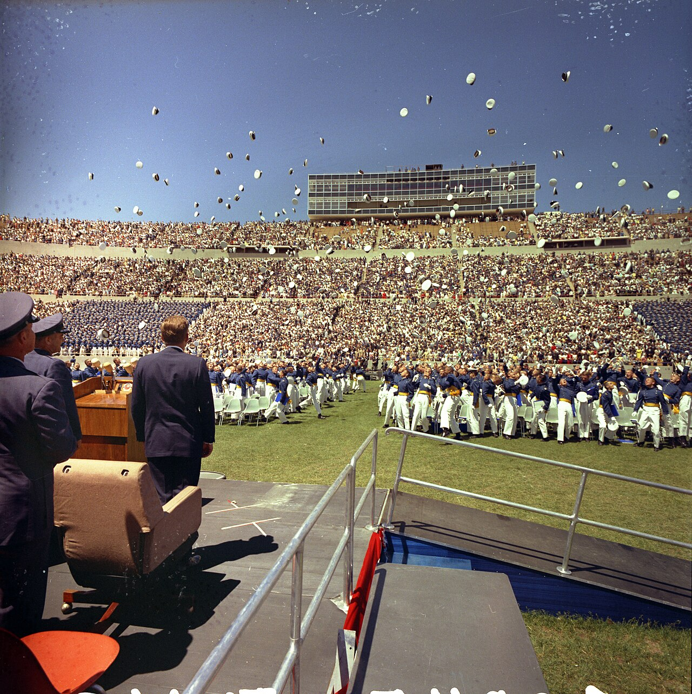

What CGPA or Marks Do Pakistani Applicants Actually Need?
Last updated: October 2026. Grade rules change between cycles. Verify the current rule on the official programme page before applying.

Ask ten scholarship blogs what CGPA you need and you will get ten different numbers, because there is no single answer. Each programme measures grades differently, and some barely measure grades at all. This page gives the rule for each programme on this site, explains how Pakistani marks translate, and says honestly what a low CGPA means for each route.
Programme by programme
| Programme | Grade rule | What it means for you |
|---|---|---|
| Chevening | Upper second-class (2:1) honours equivalent | As a rough guide, many UK universities treat around 60% or a 3.0 CGPA as 2:1-equivalent, but each university decides for itself. Your three chosen universities are the authority. |
| Fulbright Pakistan (USEFP) | No CGPA cutoff in the published Degree rules | The published rules centre on your degree and your GRE score. Check usefp.org for any grade guidance in the current cycle rather than trusting a blog's number. |
| DAAD EPOS | Above-average record, roughly the upper third of your class | One published course example asks for a grade of 2.5 or better on the German scale. Your class position matters as much as your raw marks. |
| Erasmus Mundus | Strong academics, set per programme | Many programmes expect first or upper second-class standing. The programme's own eligibility page is the authority. |
| Türkiye Bursları | Hard minimums: 70% / 75% / 90% | 70% for bachelor's, 75% for master's and PhD, 90% for medicine, dentistry and pharmacy at bachelor's level. Below the line means ineligible — no essay compensates. |
| Fulbright India (USIEF Master's) | At least 55% marks | For Indian applicants: a US-equivalent bachelor's with at least 55%, plus three years of paid relevant work. See the India section on our Fulbright page. |
Percentages, CGPA and the German scale: how conversion really works
Pakistani universities award percentages, CGPAs on a 4.0 scale, or both, and their scales differ from each other. There is no single official percentage-to-CGPA conversion table that all scholarship programmes accept, and you should never invent a converted figure. Report the figure your university awarded, exactly as it appears on your transcript. If a form asks for both, give both. Programmes and universities convert grades themselves, using their own tables, and some ask for your class position or division as well.
Two practical consequences follow. First, get an official transcript that shows your full record, not a summary — selectors distrust summaries. Second, if your university can issue a letter stating your division or class rank, keep it ready; for DAAD especially, "upper third of class" is a claim your documents should support.
What if your CGPA is low?
Be programme-specific, not generally hopeful. If you are below Türkiye Bursları's hard minimum for your level, that route is closed for this cycle — apply elsewhere rather than hoping the threshold bends. If you are applying to Chevening or DAAD EPOS, grades are one factor among several: verified work experience, a specific and credible career plan, strong references and a motivation letter tied to real work can outweigh a modest transcript. Erasmus Mundus sits in between: grades weigh heavily in most consortia, but a programme that values relevant experience or a portfolio may still take you seriously.
Three moves help more than any other: choose programmes where your strengths are weighted (experience for Chevening and DAAD, field fit for Erasmus), write essays about specific work rather than general ambition, and ask referees who can speak to your actual performance, not your grades. What does not help: inflating a CGPA, rounding 69.5% up to 70%, or submitting a transcript that omits weak semesters. Selectors check, and a caught exaggeration ends not just one application but your credibility.
Transcripts: the document behind the number
Whatever your marks, your transcript must be complete — every semester, every subject, with the university's stamp or seal where the programme asks for it. Some programmes ask for Higher Education Commission attestation for Pakistani degrees; check each programme's document list rather than assuming. If any document is not in English, arrange a certified translation early. Full preparation detail is in our documents checklist.